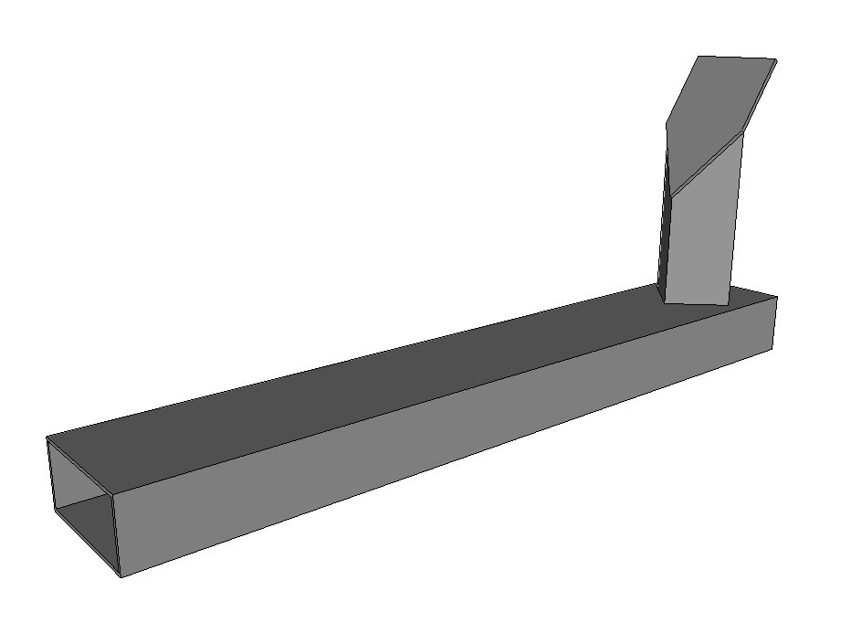
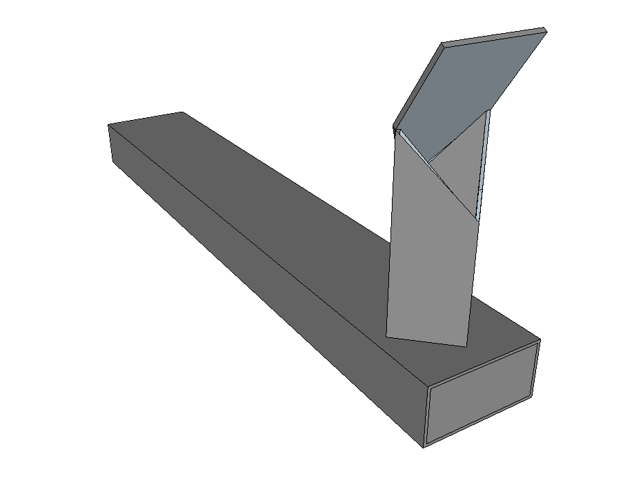

Les proportions des Batchrockets
Introduction
Les poêles de masse sont composés d'un coeur de chauffe dont le but est de brûler le bois le plus efficacement possible, et d'un système de récupération de la chaleur dont le but est de transmettre la chaleur des fumées à la masse.
Schéma des deux parties principales d'un poêle de masse. Schéma réalisé par G. Stephens, association UZUME.
Dans notre cas le coeur de chauffe est un Batchrocket et cet article détaille sa construction. Pour comprendre comment fonctionne le système de récupération de chaleur, voir l'article sur les cloches. Pour voir des poêles de masse dans leur intégralité, voir l'article sur nos réalisations.
Le principe
Les Batchrockets sont basés sur un jeu de proportions qui leur permet de brûler efficacement le bois. On peut donc construire des Batchrockets de quasiment toutes les tailles en fonction des besoins : les dimensions changent, mais pas les proportions.
Anatomie d'un Batchrocket.
En clair, la "dimension fondamentale" à partir de laquelle on déduit toutes les autres est issue du diamètre de la cheminée interne. En multipliant ce diamètre par 0,72 on obtient la "dimension fondamentale". Ensuite :
- La longeur de la cheminée interne varie entre 8 et 10 fois la dimension fondamentale;
- La largeur du foyer correspond à 2 fois la dimension fondamentale;
- La hauteur du foyer correspond à 3 fois la dimension fondamentale;
- La profondeur du foyer varie entre 3,5 et 6 fois la dimension fondamentale;
- La largeur du port correspond à la moitié de la dimension fondamentale;
- La hauteur du port correspond à 2,2 fois la dimension fondamentale.
Les différents éléments qui composent un Batchrocket ont tous des proportions bien précises qu'il faut respecter (à ~5%) pour que le coeur de chauffe brûle correctement.
Vues 3D d'un Batchrocket.
Concernant la cheminée interne :
La cheminée interne est située au bout du foyer, après le port. Le port crée un double vortex dans la cheminée interne. Celui-ci se prolonge jusqu'à la fin de la cheminée interne, formant une double spirale ascendante : c'est l'endroit parfait pour que les gaz issus de la pyrolyse du bois se mélangent avec de l'oxygène pour s'enflammer.
Une cheminée interne et la double spirale ascendante à l'intérieur. Sur la photo, une seule est visible. Source : Pascal Burnet, Stage UZUME, 2017.
La cheminée interne peut être de section intérieure carré, octogonale ou cylindrique. Cette dernière forme est la plus adaptée car elle permet une formation plus aisée du double vortex, d'où une meilleure combustion.
La cheminée interne doit être construite en un matériau réfractaire supportant au moins 1200°C et le contact direct avec des flammes. Pour une meilleure combustion, la cheminée interne gagne aussi à être isolée.
Une cheminée interne entrain d'être montée. Source : Pascal Burnet, Stage UZUME, 2017.
Plus la cheminée interne est haute, plus le poêle va créer son propre tirage et plus les gaz auront le temps de brûler donc cela permettra :
- de mettre du plus gros bois;
- de réduire les chances de refoulement;
- de mieux gérer les emballements.
Avec les Batchrockets, c'est la cheminée interne et son double vortex qui gèrent la combustion des gaz issus de la pyrolyse du bois. Donc, plus la cheminée interne est longue, plus la combustion du bois aura le temps de se faire et plus le poêle sera capable de gérer les emballements.
D'après les travaux de Peter van den Berg, la longueur de la cheminée interne doit être comprise entre 8 et 10 fois la dimension "fondamentale". Cette longueur permet de très bien gérer les emballements, ce qui permet aux Batchrockets d'avoir une combustion très stable.
En pratique, les cheminées internes des Batchrockets sont hautes et obligent à faire des poêles assez hauts. Le compromis auquel nous sommes arrivé consiste à utiliser des matériaux cylindriques et très isolants pour la cheminée interne et de raccourcir les cheminée internes à environ 8 fois la dimension "fondamentale". Nous sommes entrain de tester les performances des poêles avec des cheminée internes encore plus courtes pour faire des poêles plus petits.
Concernant l'arrivée d'air secondaire :
Dans les anciennes versions, l'air secondaire arrivait par le dessus du foyer et on l'appelait alors le p-channel. L'air secondaire arrive maintenant par le bas et on l'appelle canal de sol ou encore cobra à cause de sa forme.
Par rapport à la version précédente, il apporte beaucoup d'avantages :
- démontable et remplaçable, il est seulement posé dans une tranchée au fond du foyer;
- il n'y a maintenant qu'une seule arrivé d'air : tout l'air arrive par un trou dans la porte et se sépare en air primaire et secondaire naturellement. Les portes sont plus simples et étanches.
- meilleure combustion;
Les proportions sont simples :
- La section du tube horizontal correspond à 10% de la section de la cheminée interne;
- La section du tube vertical correspond à 5% de la section de la cheminée interne;
- Le sommet de la partie verticale est découpé à 45° et son point le plus haut doit arriver au milieu du port;
- La distance entre le tube vertical et le port est telle que la surface libre sur ses cotés soit égale à la surface du port;
- 
- 
Vues 3D de l'arrivée d'air secondaire.
L'arrivée d'air secondaire est posée dans une "tranchée" en bas du foyer, de sorte que le dessus de la partie horizontale de l'arrivée d'air secondaire corresponde au sol du foyer.
Attention, l'air n'entre que par la porte (c'est l'arrivée d'air principale). Il se sépare ensuite naturellement en air primaire (qui passe dans le feu) et en air secondaire (qui passe sous le feu et ressort derrière lui). C'est avantageux parce que cela simplifie à la fois la construction et l'utilisation par rapport à d'autres poêles où il faut régler à la fois l'air primaire et secondaire.
En fait, c'est un réglage "automatique" de l'air secondaire : en début de flambée c'est l'air primaire qui est le plus important. Ensuite, lorsque le conduit métallique de l'arrivée d'air secondaire se chauffe, l'air secondaire gagne en importance. On évite ainsi trop d'air primaire sur le bois et les braises dans le foyer, ce qui a tendance à les refroidir lorsque la pyrolyse est bien lancée. En pleine combustion on a donc le foyer qui décompose le bois en gaz (la pyrolyse) et la cheminée interne qui le brûle en le mélangeant avec une grande partie d'air préchauffé (l'air secondaire) et une moindre partie d'air primaire.
Les dimensions des Batchrockets
Le tableau ci-dessous résume les dimensions de chaque coeur de chauffe pour les modèles "standards" que nous proposons.
| Diamètre de la cheminée interne (mm) | 140 | 165 | 200 | 230 | 250 | ||
|---|---|---|---|---|---|---|---|
| Hauteur de la cheminée interne (mm) :valeurs min et max | 800 | 950 | 1150 | 1300 | 1400 | ||
| 1000 | 1200 | 1400 | 1650 | 1800 | |||
| Dimensions de la chambre de combustion : | |||||||
| Largeur (mm) | 200 | 240 | 290 | 330 | 360 | ||
| Hauteur (mm) | 300 | 360 | 430 | 500 | 540 | ||
| Profondeur (mm) :valeurs min et max | 330 | 400 | 480 | 550 | 600 | ||
| 550 | 650 | 800 | 900 | 1000 | |||
| Largeur des triangles (mm) | 65 | 75 | 95 | 110 | 120 | ||
| Dimensions du Port : | |||||||
| Largeur (mm) | 50 | 60 | 72 | 83 | 90 | ||
| Hauteur (mm) | 220 | 260 | 320 | 370 | 400 | ||
| Profondeur min (mm) | 60 | 60 | 60 | 60 | 60 | ||
| Dimensions de l'arrivée d'air secondaire : | |||||||
| Dimensions du tube horizontal (mm) | 60x30x2 | 80x40x2 | 80x40x2 | 100x50x2 | 100x50x2 | ||
| Dimensions du tube vertical (mm) | 30x30x2 | 40x40x2 | 45x45x2 | 50x50x2 | 60x60x2 | ||
| Distance tube vertical-Port (mm) | 11 | 13 | 16 | 18 | 20 | ||
| Dimensions de l'arrivée d'air principale (dans la porte) : | |||||||
| Surface de l'ouverture (mm2) | 3850 | 5350 | 7850 | 10400 | 12300 | ||
| SIA* en simple cloche (m2) | 4,6 | 6,4 | 9,4 | 12,5 | 14,7 | ||
| SIA en double cloche (m2) | 3,9 | 5,4 | 8,0 | 10,6 | 12,5 | ||
* : SIA signifie Surface Interne Absorbante.
La feuille de calcul complète avec les détails des formules utilisées est disponible ici : Batchrocket_dimensions_version_simplifiee.ods
Les cheminées d'évacuation
La théorie
Pour les Rocket Stoves, la tradition voulait qu'on utilise des cheminées d'évacuation du même diamètre que celui de la cheminée interne. C'est une règle de base précieuse pour les rockets mais insuffisante pour les Batchrockets.
L'objectif de la cheminée d'évacuation est de créer un tirage suffisant pour que les gaz y passent et sortent de la maison. Le tirage est une aspiration créée par une différence de pression négative (une dépression) entre la sortie et l'entrée de la cheminée d'évacuation.
Si la cheminée d'évacuation ne produit pas une dépression suffisante, les gaz préféreront prendre un chemin plus naturel pour eux.. celui de la pièce à vivre et des interstices dans le toit !
Les facteurs de base qui influencent le tirage sont :
- La différence de hauteur entre le bas et le haut de la cheminée d'évacuation.
En effet, de la même manière que plus on descend sous l'eau plus la pression augmente, plus on monte dans l'air plus la pression diminue. On perd environ 12 Pa de pression par mètre de hauteur.
- La température des gaz dans la cheminée d'évacuation.
Les gaz chauds, plus légers, montent. Telle est la loi. L'air étant visqueux, il va coller aux autres molécules d'air et les entrainer dans son sillage. Donc plus les gaz entrant dans la cheminée d'évacuation sont chauds, plus ils créeront du tirage.
- Les "pertes de charge" (frottements, dévoiements) sur le chemin des gaz.
On constate tous les jours le même phénomène avec les conduites d'eau. Plus le conduit est petit, tordu, pincé, moins le débit en sortie est important.
- Les défauts d'étanchéité dans la toiture et la différence de hauteur entre le sommet de la toiture et la sortie de la cheminée d'évacuation.
Une maison dont le toit est percé représente une cheminée gigantesque. Elle concurrence la cheminée d'évacuation et peut même, dans certains cas, la vaincre. Dans ce cas on dit que le poêle refoule. c'est que les gaz sont aspirés par ces deux "cheminées" en même temps, et que la cheminée/maison l'aspire plus fortement. Pour s'en convaincre, il suffit d'ouvrir un velux pendant qu'un poêle fonctionne pour le voir ralentir et parfois même refouler.
La pratique
En clair, une cheminée d'évacuation idéale est :- Haute d'au moins 4-5 m.
- Isolée au moins sur la partie au dessus du toit. Les gaz qui y rentrent doivent être suffisamment chauds.
- Droite, lisse à l'intérieur et de section suffisamment importante.
- Plus haute que le sommet du toit d'au moins 40 cm. Le toit doit être suffisamment étanche de l'intérieur pour ne pas concurrencer la cheminée d'évacuation.
Pour gérer toutes ces contraintes prévoyez impérativement un clapet de démarrage (aussi appelé "starter" ou "by-pass"). Celui-ci va permettre d'envoyer des gaz chauds directement dans la cheminée d'évacuation au démarrage du poêle. On réchauffe ainsi pendant 5-10 minutes la cheminée pour créer un bon tirage puis on ferme le clapet.
La conséquence directe du paragraphe précédent, c'est que la cheminée d'évacuation doit être accolée au poêle. Pour un Batchrocket, les longs bancs sans starter avec la sortie au bout ne fonctionnent pas.
La cheminée d'évacuation, si elle n'est pas isolée, doit être prise en compte dans le dimensionnement de la cloche. Voir l'article correspondant pour plus de détails.
Dans tous les cas, une cheminée d'évacuation de 180 ou 200 mm de diamètre suffit. Même pour des Batchrockets dont la cheminée interne mesure 230 ou 250 mm de diamètre. Pour les plus petits poêles (Batchrocket de diam. 165 mm et inférieurs), une cheminée de diamètre 150 mm suffit.